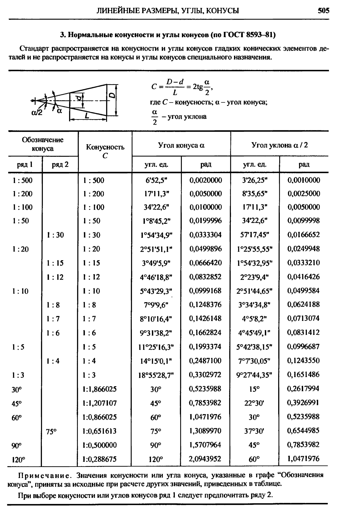
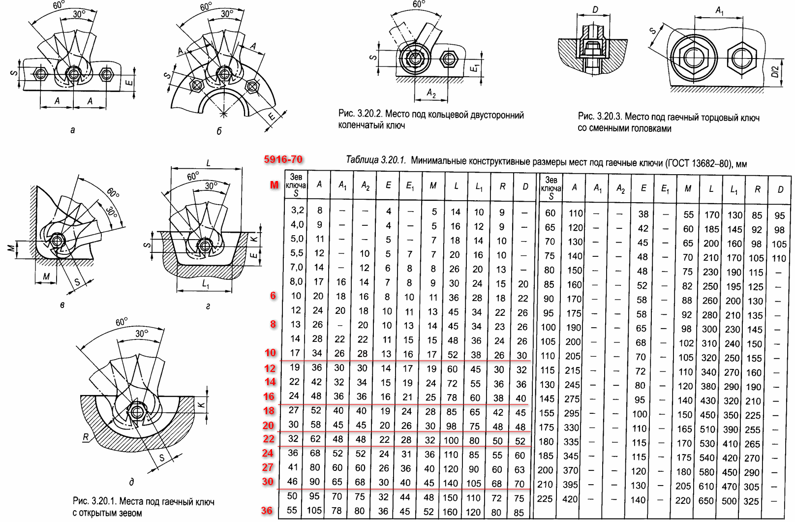

В примечании указывается открывается стандарт в браузере или скачивается на комп. На мобильные устройства скачиваются все файлы.
| ГОСТы | ||
|---|---|---|
| Номер | Наименование | Прим. |
| 2879-2006 | Шестигранник. Сортамент | О |
| 3262-75 | Трубы стальные водогазопроводные. Сортамент + ТУ | О |
| 6111-52 | Резьба коническая дюймовая (NPT) | O |
| 6211-81 | Резьба трубная коническая (BSPT) | O |
| 6357-81 | Резьба трубная цилиндрическая (BSPP) | O |
| 8239-89 | Двутавры стальные горячекатанные. Сортамент | O |
| 8240-97 | Швеллеры стальные горячекатанные. Сортамент | O |
| 8509-93 | Уголки стальные гк равнополочные. Сортамент | O |
| 8510-86 | Уголки стальные гк неравнополочные. Сортамент | O |
| 8639-82 | Трубы стальные квадратные. Сортамент | O |
| 8645-68 | Трубы стальные прямоугольные. Сортамент | O |
| 8732-78 | Трубы стальные бесшовные горячедеформированные. Сортамент | O |
| 10704-91 | Трубы стальные электросварные. Сортамент | O |
| 13682-80 | Места под ключи гаечные | O |
| 18599-2001 | Трубы напорные из полиэтилена. Сортамент + ТУ | О |
| 33259-2015 | Фланцы арматуры и трубопроводов до PN250 | O |
| 33259-2015 | Фланцы - Что изменилось в ГОСТе | O |
| DIN | ||
| Номер | Наименование | Прим. |
| DIN228 | Резьба BSPP | O |
Как и в Великобритании, с 1958 года американский дюйм приравнивается к 2,54 см — для отличия от остальных эта единица называется международный дюйм. Ранее (с 1866 года) был равен 2,54000508 см (точнее, 10000/3937 см); иногда это старое значение используется и ныне под названием геодезический дюйм.
Традиционное обозначение диаметров водо- и газопроводных труб в дюймах не выражает непосредственно ни наружный, ни внутренний диаметры труб. Такое обозначение более близко к обозначению условного прохода трубопроводных элементов, который может выражаться как в англо-американской дюймовой, так и в метрической европейской системе. Тем не менее, не существует какой-либо формулы для перевода «трубных дюймов» в миллиметры или в «обычные» дюймы с целью узнать действительный наружный или внутренний диаметр трубы. Условный проход в метрической системе тоже слабо связан с геометрическим диаметром труб. Для однозначного сопоставления условного дюймового диаметра стандартному наружному диаметру трубы и диаметрам трубной резьбы необходимо пользоваться справочной литературой и нормативной документацией.
ГОСТ 3262-75 устанавливает технические условия на стальные трубы, применяемые для водопроводов и газопроводов, но он не нормирует и не обозначает диаметр труб в дюймах. При нарезке трубной резьбы необходимо руководствоваться ГОСТ 6357-81 (DIN228), который устанавливает основные размеры трубной цилиндрической резьбы в миллиметрах, но использует обозначение размера резьбы в дюймах. Таким образом, для установления соответствия между дюймовым размером трубы и её действительным геометрическим диаметром необходимо сопоставление данных, приведенных в этих двух стандартах.
К примеру, наружный диаметр 1/2" трубы в соответствии с ГОСТами равен 21,3 мм, а 5" трубы — 140,0 мм. При попытке вычислить пересчётный коэффициент обнаруживается, что «трубные дюймы» — больше стандартного значения 25,4 мм и «разные» для разных диаметров трубы. Например обычный дюйм (1") равен 25,4 мм, "трубный дюйм", равен 33,249 мм.
Приведенная таблица построена на основе упомянутых выше ГОСТов, но не претендует на полноту и не может служить заменой официальной нормативной документации.
| Обозначение резьбы | DN трубы | Наружный ∅ резьбы,мм | Наружный ∅ трубы,мм |
|---|---|---|---|
| ⅛ | 6 | 9,728 | 10,2 |
| ¼ | 8 | 13,157 | 13,5 |
| ⅜ | 10 | 16,662 | 17,0 |
| ½ | 15 | 20,955 | 21,3 |
| ¾ | 20 | 26,441 | 26,8 |
| 1 | 25 | 33,249 | 33,5 |
| 1¼ | 32 | 41,910 | 42,3 |
| 1½ | 40 | 47,803 | 48,0 |
| 2 | 50 | 59,614 | 60,0 |
| 2½ | 65 | 75,184 | 75,5 |
| 3 | 80 | 87,884 | 88,5 |
| 3½ | 90 | 100,330 | 101,3 |
| 4 | 100 | 113,030 | 114,0 |
| 5 | 125 | 138,430 | 140,0 |
| 6 | 150 | 163,830 | 165,0 |
Калибр стрелкового оружия в США принято измерять в сотых долях дюйма, (в Великобритании — традиционно в тысячных долях). Например, знаменитый 45-й калибр — это 0,45 дюйма (или 11,43 мм); 30-й — это 0,30 дюйма (или 7,62 мм); 50-й — это 0,50 дюйма (или 12,7 мм), и т. д.


Pol Banky © 2018